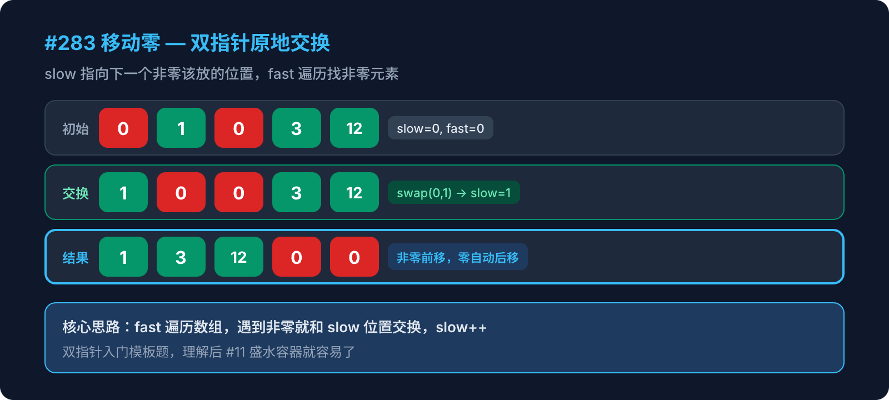

Hot 100 · 双指针 · 第1周

给定一个数组 nums，编写一个函数将所有 0 移动到数组的末尾，同时保持非零元素的相对顺序。
要求：必须在原地操作，不能拷贝额外数组。
输入：nums = [0, 1, 0, 3, 12]
输出：[1, 3, 12, 0, 0]最简单的思路是什么？
点击每一步展开详细说明
slow 从 0 开始，它始终指向"下一个非零元素应该放置的位置"。
slow 左边的所有元素（[0, slow)）都是已经排好的非零元素。
slow 就像一个"安置员"，只负责接收非零元素。
fast 从 0 开始，逐一扫描每个元素。
它就像一个"侦察兵"，负责在数组中找到非零元素，然后交给 slow。
当 fast 找到一个非零元素时：
nums[slow] 和 nums[fast] 交换slow++，准备接收下一个非零元素// 交换操作
[nums[slow], nums[fast]] = [nums[fast], nums[slow]]
slow++无论是否交换，fast 每一轮都 ++。
遇到 0 就跳过（只有 fast++），遇到非零就交换并推进两个指针。
当 fast 到达数组末尾，所有非零元素都已经被交换到前面，剩下的自然是零。
输入：[0, 1, 0, 3, 12]
| 步骤 | fast | slow | nums[fast] | 操作 | 数组状态 |
|---|---|---|---|---|---|
| 初始 | - | 0 | - | - | [0, 1, 0, 3, 12] |
| 1 | 0 | 0 | 0 | 跳过（是零） | [0, 1, 0, 3, 12] |
| 2 | 1 | 0 | 1 | swap(0,1), slow++ | [1, 0, 0, 3, 12] |
| 3 | 2 | 1 | 0 | 跳过（是零） | [1, 0, 0, 3, 12] |
| 4 | 3 | 1 | 3 | swap(1,3), slow++ | [1, 3, 0, 0, 12] |
| 5 | 4 | 2 | 12 | swap(2,4), slow++ | [1, 3, 12, 0, 0] |
[1, 3, 12, 0, 0] — 非零元素相对顺序不变，零全部移到末尾。
function moveZeroes(nums) {
let slow = 0
for (let fast = 0; fast < nums.length; fast++) {
if (nums[fast] !== 0) {
[nums[slow], nums[fast]] = [nums[fast], nums[slow]]
slow++
}
}
}fast 从头走到尾），没有嵌套循环。slow 和 fast 都只往前走，不回头。额外空间只用了两个指针变量。
如果数组是 [1, 2, 3]（没有零），这个算法会出错吗？